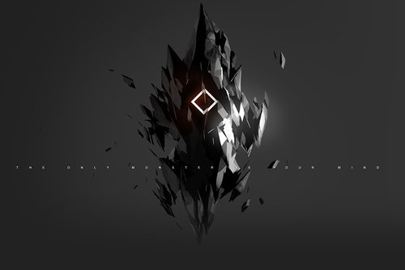
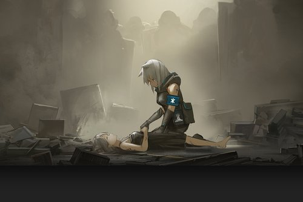
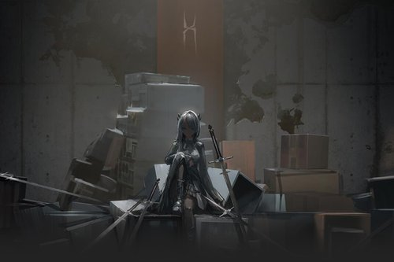
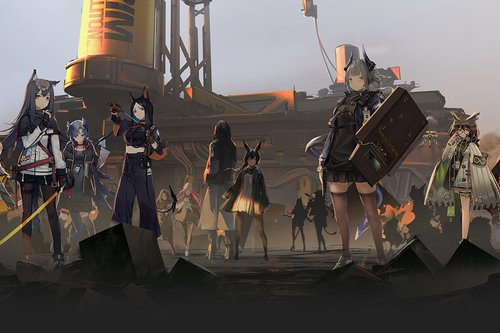

世界观
源石
大地被起因不明的天灾四处肆虐，经由天灾席卷过的土地上出现了大量的神秘矿物——被人们称为“源石”。虽然源石的发现历史已久，但是依赖于技术的进步，其蕴含的能量投入工业后使得文明顺利迈入现代，与此同时，源石本身也催生出“感染者”的存在。
感染者
被源石所感染的人。理论致死率100%，死亡时存在扩散传染性以及潜在危险能力，是各国隔离驱逐的目标。长久以来，没人告诉他们该如何渡过余生，如今伴随着一位颠覆者的出现，越来越多的感染者被纳入一场名为“整合运动”的反抗浪潮。
整合运动
作为一个无种族立场，极端排外的感染者组织，整合运动宣称感染者"应对自己的身份感到骄傲，积极去获取并使用属于自己的力量"。试图用最原始的手段去争夺世界的公正。以某座被摧毁的伟大城市为开端，医疗机构“罗德岛”的突然介入，令整个事态向着未知发展。
罗德岛
罗德岛制药公司作为感染者问题专家，聘用感染者，深入危险地区，通过种种手段，已经成功解决了数起感染者引发的事件。而今，他们将面对史无前例的感染者暴乱。在各个势力间游走，发掘不为人知的内幕，抵挡感染者的疯狂进攻，你的决策将决定罗德岛的方向。